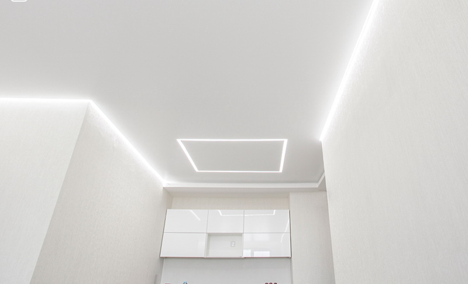
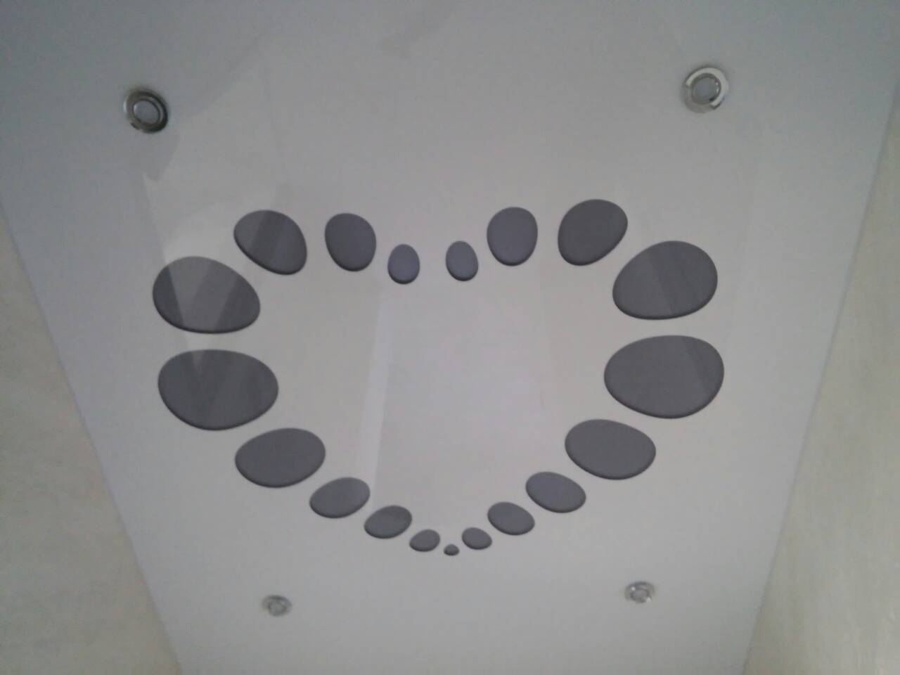
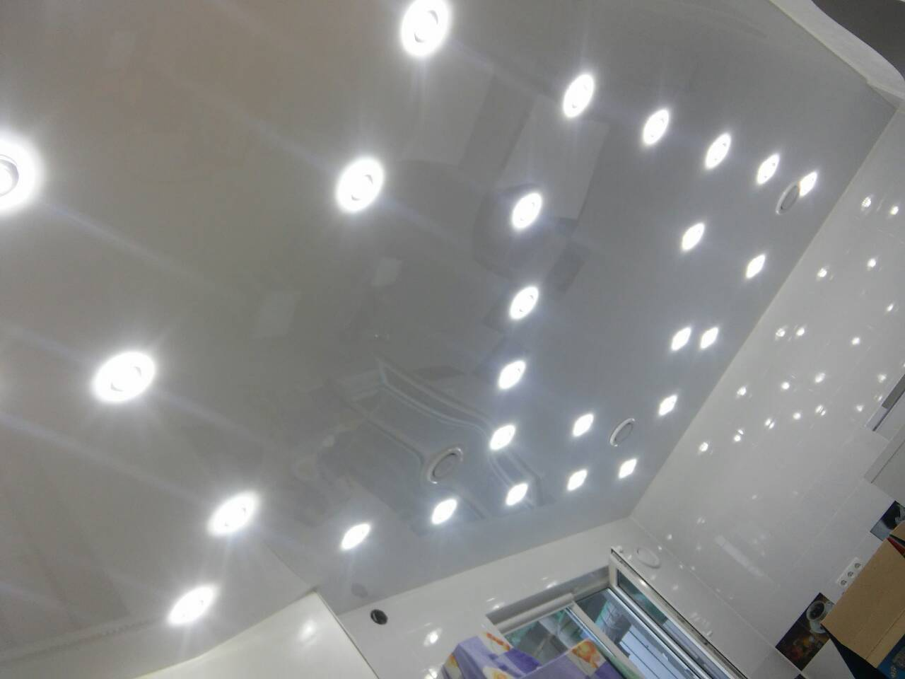

Мы выполняем монтаж и продажу
НАТЯЖНЫХ ПОТОЛКОВ
в Киеве и более чем в 90
городах по всей Украине

Довольных
3200+ клиентов
за 2019 год
Своевременная установка
монтаж потолков
занимает (от) 4 часов
Вы получаете
договор и гарантийный
талон на 12 лет
12-летний опыт работы
более 90 городов где мы
устанавливаем потолки
О нас
Мы занимаемся своей деятельностью уже 12 лет и за это время смогли зарекомендовать себя в качестве надежного и ответственного исполнителя. Мы делаем все возможное для завоевания вашего доверия и оправдания ожиданий.
Мы являемся самой большой сетью в Украине.
В 2019 году нашими услугами воспользовалось более 3000 клиентов.
Солидный опыт. Компания начала свою деятельность в 2008 году.
Более 30% заказов мы получаем благодаря клиентским рекомендациям.
Глянцевые натяжные потолки
Глянцевые (лаковые) потолки – одна из популярных разновидностей натяжных потолков. ПВХ плёнка, используемая для их создания, имеет более 70 оттенков, что позволяет подобрать их к любому интерьеру (особенно к стилям хай-тэк и модерн).
Матовые натяжные потолки

Любителям классики отлично подойдут матовые натяжные потолки. Схожие по внешнему виду с обычными потолками, они не дают блики, не желтеют со временем, не требуют тщательного ухода и частого ремонта, характеризуются идеальной гладкостью, пожаробезопасные и звуконепроницаемые.
Сатиновый потолок
Сатиновые полотна универсальны – они подходят под любой интерьер, смотрятся красиво и эстетично, ведь они – та самая «золотая середина» между глянцевыми и матовыми потолками. Также сатиновые потолки идеальны для решений с использованием скрытой LED-подсветки, парящих световых линий и точечных светильников, поскольку равномерно и плавно распределяют свет.
Натяжные потолки с рисунком (Фотопечать)
Уникальность – вот главное достоинство натяжных потолков с фотопечатью. В качестве рисунка для натяжного потолка сегодня можно выбрать готовое изображение из огромной базы или принести свою собственную любимую фотографию. В итоге получится эксклюзивное произведение искусства. Натяжные потолки с фотопечатью можно заказать в компании «Гарпун» по очень доступным ценам в Украине.
Многоуровневые натяжные потолки
Если необходимо декорировать потолок в большом помещении, например, квартира-студия, то лучше многоуровневого потолка пока ничего не придумано. Многоуровневый потолок может разделить общую площадь квартиры на различные зоны: кухонную, жилую, прихожую, и подчеркнёт освещением их стилевое различие.
Криволинейные натяжные потолки
Такой вид потолков – одноуровневый. Такой потолок выполняется из полотен разных фактур или цветов с использованием криволинейной спайки, что создает имитацию многоуровневого потолка.
Парящий потолок

Эффект «парящего потолка» достигается благодаря установке светодиодной ленты в специальный профиль по всему периметру потолка. Благодаря скрытой подсветке стыка полотна натяжного потолка со стеной создается такой эффект, будто потолок висит в воздухе и не соприкасается со стенами. Для монтажа таких потолков мы используем специальный профиль и направляющие, также устанавливаем источник света под определенным углом для усиления эффекта “парения”.
Натяжной потолок на мансарде
Сегодня частыми заказчиками натяжных потолков являются владельцы частных домов. Если в вашем доме наклонные и сложные формы потолков или есть мансарда, то одним из лучших решений будет установка натяжного потолка.
Резные потолки
Резные натяжные потолки – новая и уникальная технология в мире дизайна, необычная возможность комбинировать несколько цветов и фактур полотен. Индивидуальные дизайны изображений и бесконечные сочетания цветовой гаммы дают возможность для создания яркого и необычайно красивого акцента в комнате.

